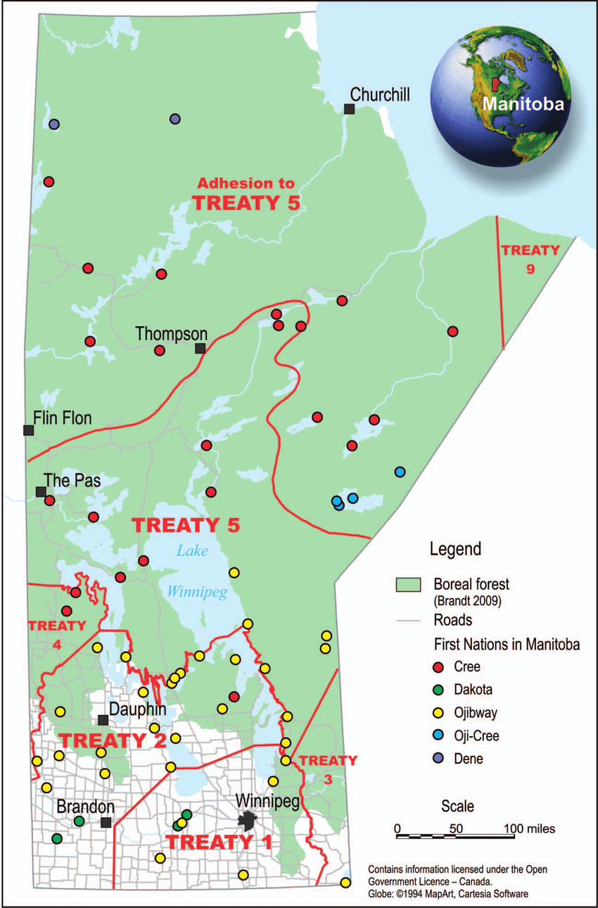

About Treaty 5
Treaty 5, or the Winnipeg Treaty, was signed in 1875-76 by the federal government, Ojibwa peoples and the Swampy Cree of Lake Winnipeg. This treaty included First Nations tribes located in the northern regions of Saskatchewan, Manitoba, and Ontario, including Saulteaux, the number of bands that inhabited the Beren's River region, and the Norway House region. Treaty 5 covers much of present-day central and northern Manitoba. The aboriginal people that were included in treaty 5 wanted nothing more than what had already been offered to other first nations group under the original treaties. The people in and around Lake Winnipeg had not been included under previous agreements. They wanted recognition of their claim to the area as well as certain hunting and fishing rights. Other groups around those included in treaty 5 had also received “treaty money” and this was also a demand made by some groups. There were also two demands from specific bands that made the signing of this treaty somewhat unique. The band at Beren's River had asked for construction tools in addition to the monetary payment. The people of the Norway House (located about 30 km north of Lake Winnipeg) were also suffering from starvation, as the lands there were not suitable for farming. This community was looking to relocate from north of the lake to an area in the south that had more suitable agricultural lands. Their relocation proposal was met with government approval, and it was agreed that the Crown would include the people of the Norway House in treaty negotiations.
History
In the mid-1870s, the Indigenous peoples of the Lake Winnipeg area were interested in making a treaty with the Government of Canada. They had heard about the concessions offered to the Indigenous nations of Treaties 1 to 4, and subsequently demanded the government provide similar economic assistance, provisions of tools and protection against the encroachment of outsiders (such as surveyors and settlers) on their territories. While the government was interested in opening up the Lake Winnipeg region for future development, they were not initially keen on negotiating a new treaty. Treaties 1 to 4 had already secured title to the agricultural belt in the West. The government eventually agreed to enter treaty talks with the Berens River bands and other communities around the lake. However, they were not yet willing to negotiate a treaty with Indigenous bands north of the lake, even though they too had expressed a desire to enter into a treaty with the Crown. The land in the north had limited agricultural and settlement potential, and was therefore not a priority for the government. However, one exception was made for the Norway House band, as stated above, and the Treaty was created.